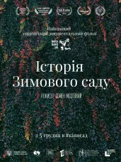
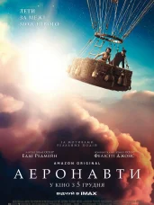
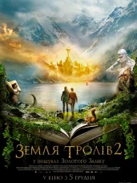

Страна, год: Украина, 2018
Жанр: документальный
Режиссёр: Семен Мозговой
Продюсер: Александр Чепига, Тарас Босак ...
Продолжительность: 1 ч. 14 мин.
Главная героиня - Валентина Воронина, которая 45 лет занимается павильоном цветоводства бывшего ВДНХ. Она всеми
силами поддерживает это пространство и вкладывает в него душу. Но однажды Воронину просят уйти на пенсию.
Женщина не дает согласие, считая, что без нее растения погибнут. Одновременно с этим группа тайных
радиоэстезистив находит у входа в павильон мощный канал положительной энергии.

Страна, год: Великобритания, 2019
Жанр: приключения
Режиссёр: Том Харпер
Сценарист: Том Харпер, Джек Торн
Продюсер: Том Харпер, Дэвид Хоберман
Актёры: Эдди Редмэйн, Фелисити Джонс, Химеш Патель, Том Кортни, Энн Рейд ...
Мировая премьера: 30.08.2019
Продолжительность: 1 ч. 40 мин.
История известных воздухоплавателей, которые в 1862 году поднялись на воздушном шаре на рекордную для человека
высоту. Она - прекрасная состоятельная девушка, которая увлекается воздушными шарами. Он - исследователь,
который готов на все, для осуществления научного прорыва. Поднявшись на воздушном шаре выше запланированного,
они совершают удивительные открытия, но им предстоит непростая борьба за выживание.

Страна, год: Великобритания, Канада, 2018
Жанр: мультфильм
Режиссёр: Аарон Вудли
Сценарист: Боб Барлен, Кэллан Брункер
Продюсер: Моника Бакарди, Андреа Иерволино
Актёры: Джеймс Франко, Джереми Реннер, Алек Болдуин, Лори Холден, Майкл Мэдсен ...
Мировая премьера: 11.02.2018
Продолжительность: 1 ч. 31 мин.
Приключения животных, которые обитают на Северном полюсе. Яростный и кровожадный ученый Морж замышляет
уничтожить Арктику, устроив глобальное потепление. О коварном плане ученого совершенно случайно узнает
лис-почтальон. Без опыта, но с большими амбициями главный герой намерен отвратить несчастье с поддержкой
собственного спасательного отряда.

Страна, год: Норвегия, 2019
Жанр: приключения, фэнтези
Режиссёр: Миккель Бренне Сандемусе
Сценарист: Александр Кирквуд Браун
Продюсер: Сюнневе Херсдаль
Актёры: Сидсе Бабетт Кнудсен, Торбьорн Харр, Элли Харбоа, Вебьёрн Энгер, Мадс Сьёгард Петтерсен ...
Мировая премьера: 18.08.2019
Продолжительность: 1 ч. 39 мин.
После того, как король и королева были отравлены, Эспен и принцесса Кристин отправляются за Живой водой,
источник которой скрыт в загадочном Золотом Замке.